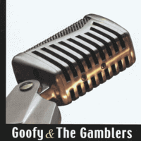

Goofy and the Gamblers - Goofy & the Gamblers (MiniAlbum, 2004)
01 - Doin' Alright (2:57)
02 - I Know (3:24)
03 - Don't Leave Me Now (3:29)
04 - What's Going On (2:49)
05 - Hot Rockin' Man (3:07)
06 - Shot Down (2:15)
07 - Goofy's Bogey (2:24)
© Bluelight Records :: [BLR 4577 2]
Notes
Lahti, Finland.
Mika Jokinen - Guitar, Vocal
Kalle Kotiranta - Drums
Antti Kukkola - Vocal, Guitars
Petri Salomaa - Doublebass
Some musicians (Mika and Petri) are members of Francine
All songs are written-by the band, but one is cover
Songs "Don't Leave Me Now", "Hot Rockin' Man" are written-by (here and further: "written-by" or "credited to") Petri Salomaa
"I Know" is written-by Antti Kukkola / Mika Jokinen - Petri Salomaa
"Doin' All Right" is written-by Antti Kukkola / Petri Salomaa
"What's Going On" is written-by Antti Kukkola / Mika Jokinen
"Goofy's Bogey" is written-by Antti Kukkola
"Shot Down" is written-by Roslie
reference information: Discogs®
Review
090/366 (Project 366)
Let us feel hot rockin' sound! The mini-album was recorded nicely with a surround friendly sound atmosphere and with a mood for chanting. Echoes, delays, reverbs and all other kind of might. Songs are pretty wild and even a bit crazy. Given the background of the band - such a sound can be called mild Psycho'n'Roll. However, entire picture is about something like Modern Rockabilly. With a good power entity and with unpretentious but worthy melodies.
The first track "Doin' Alright" featured straight rollin' rhythm. "I Know" sounds more vintage stylistically and fully emotionally colored. Then a lively tune sounded, "Don't Leave Me Now" with glibness and rockin' motive. The rhythm is flaming and invigorates in the same way as the swirling eddy wind in the summer. Tones up. Charges well. Yes, so neatly that you can then fully enjoy the next song. "What Is Going On"(?) - just ordinary boppin' on! Good theme. Restrained rockabilly that is pleasant to listen to and keynote is remembered (or at least it draws attention to itself). And how good is the switch to the largest trick, marvelous "Hot Rockin' Man"! Right to hit and feeding before a real masterpiece. Modern rock with rockabilly sauce.
The sixth track "Shot Down" - such a cheeky pathos. Gusty and without delay, quite garage sound. And switch to "Goofy's Bogey" is amazing. Very bonus ending. Danceable and persistent, although still pretty melodic and softly staged. Like many instrumental things sounds rockin' and surfin'.
The arrangements are quite thematic, although quite rigid. The vocals are wondrous and melodious. All in all, songs are hot! Guitar, drums and double bass are simply magnificent. Musicians also want to come off to the fullest.
I did not manage to have a physical CD of this Mini-Album and my experience is based on the Digital release "Goofy & the Gamblers" (2015). Thanks to Bluelight Records for an ability to buy it via all these modern digital channels. And, as a result, hear this record!